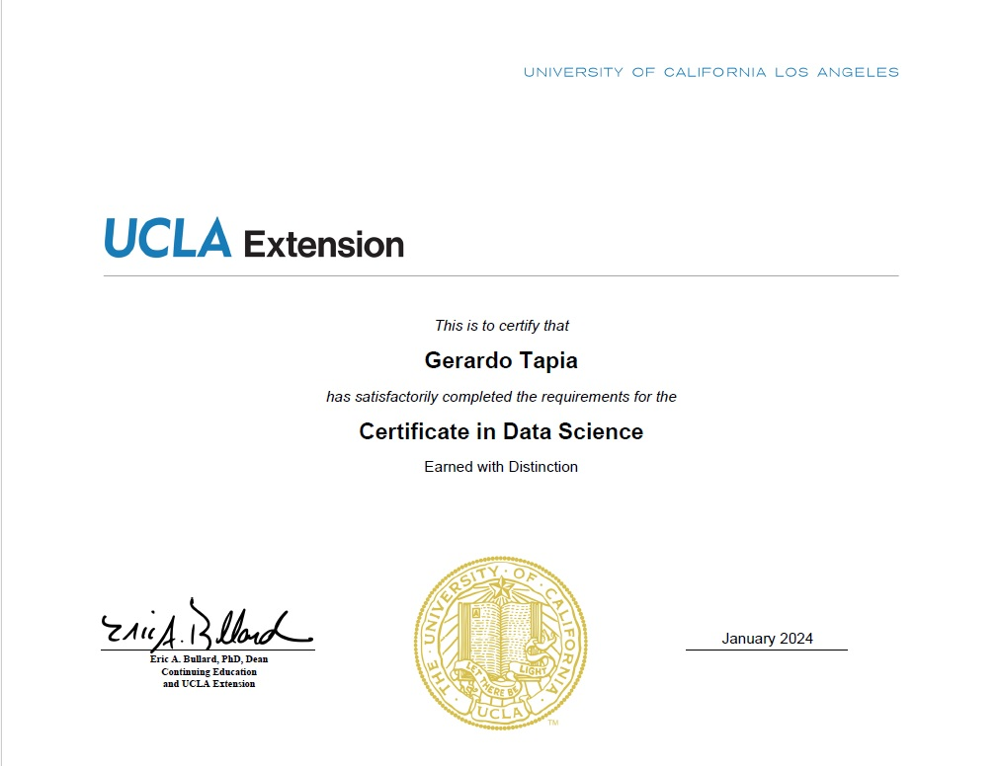
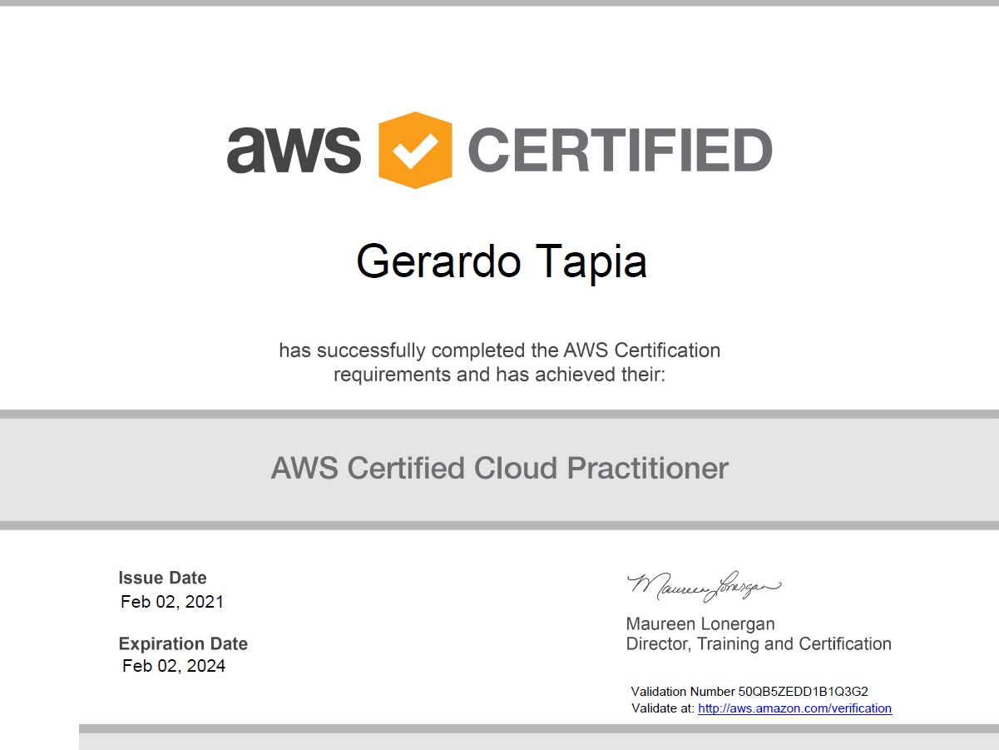
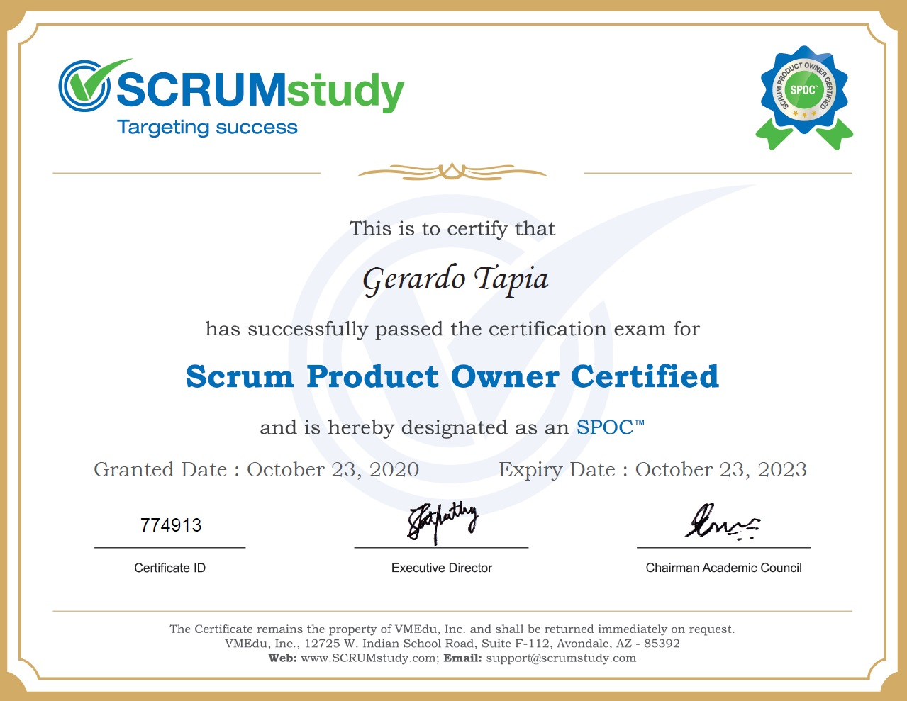

Data Science and Machine Learning: Making Data-Driven Decisions – MIT IDSS

Data Science – UCLA

Cloud Practitioner – AWS

Scrum Product Owner Certified – SCRUMStudy
Scrum Fundamentals Certified – SCRUMStudy
Six Sigma Yellow Belt – SixSigmaStudy
ITIL Foundation Certificate in IT Service Management – PeopleCERT